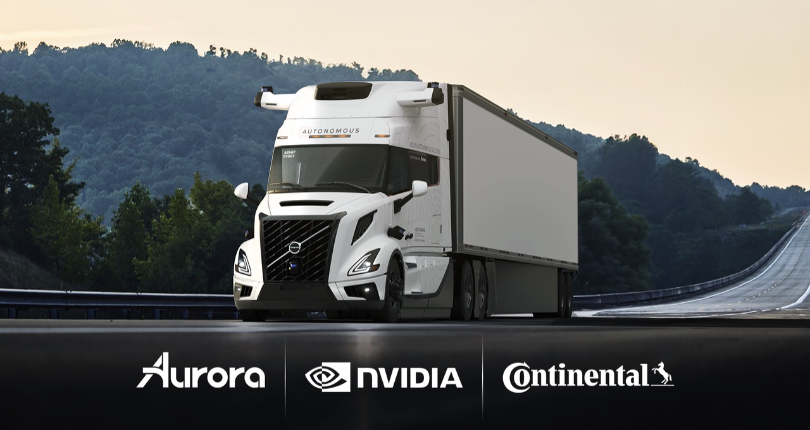
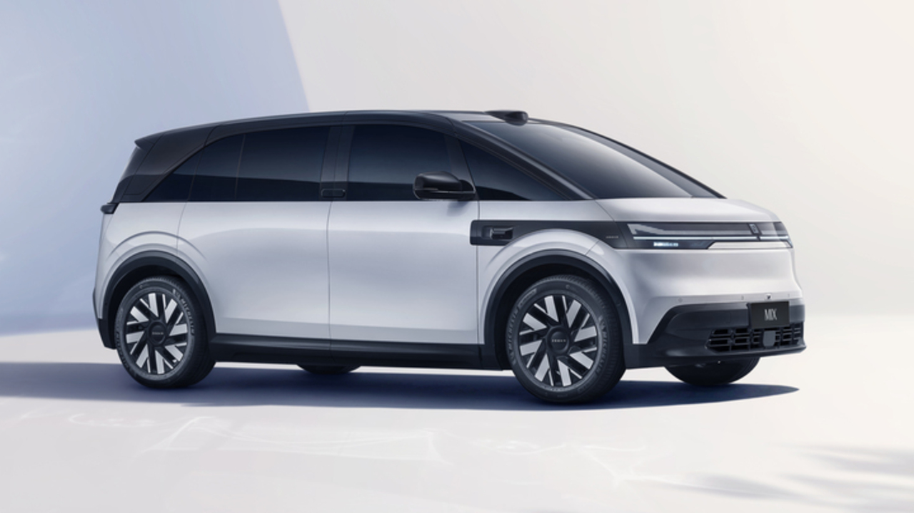
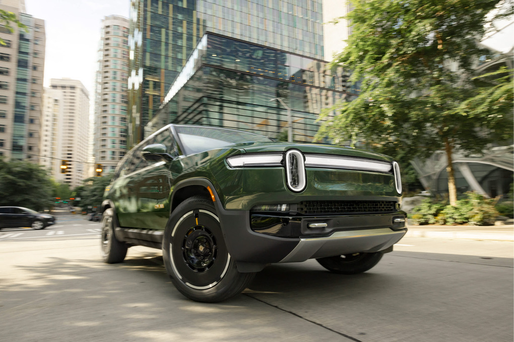
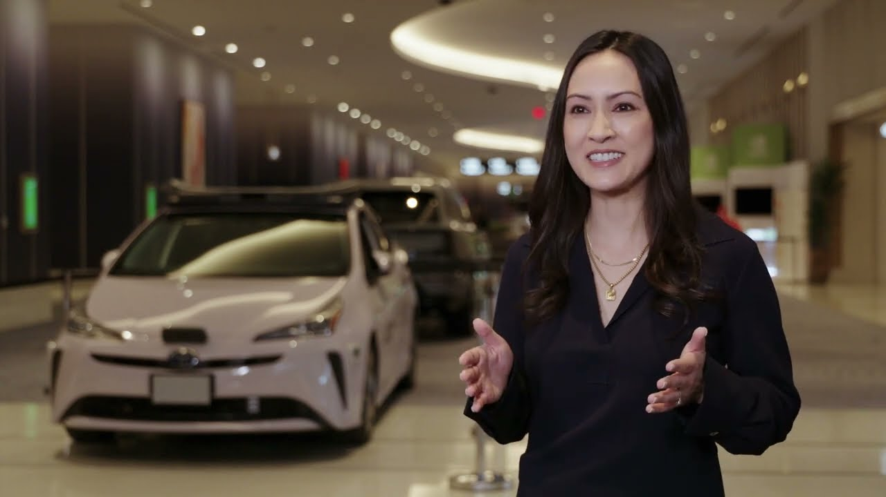

世界をリードする輸送関連企業群 — 乗用車・トラック・ロボタクシー・自律配送システムのメーカーを網羅 — が、NVIDIA DRIVE AGXプラットフォームとAIを活用してモビリティの未来を構築しようとしている。
NVIDIAの自動車事業は、クラウドベースのAIトレーニング、シミュレーション、車載コンピュートを含む、次世代の高度自動化・自律走行車（AV）開発技術の幅広いラインナップを提供している。
今週ラスベガスで開催されたCESトレードショーでは、NVIDIAの顧客やパートナーが、NVIDIA加速コンピューティングとAIを基盤に構築した最新のモビリティイノベーションを展示している。
NVIDIA Blackwellアーキテクチャを基盤とするNVIDIA DRIVE AGX Thorシステムオンチップ（SoC）は、ジェネレーティブAI・ビジョン言語モデル・大規模言語モデルを含む、輸送業界の最も要求の厳しいデータ集約型ワークロードに対応するよう設計されている。
NVIDIAのパートナーは、センサー・シミュレーション・トレーニングからジェネレーティブAI・テレドライビングに至るすべての領域を前進させるため、NVIDIAの技術と加速コンピューティングを活用し、自動車イノベーションの境界を押し広げている。以下はその主要パートナーとデモの内容だ：
1,000テラフロップスの加速コンピュートパフォーマンスを提供するDRIVE Thorは、自律走行車が周囲の世界を認識・ナビゲートするために不可欠な推論タスク — 歩行者の認識、悪天候への対応など — を加速する能力を備えている。
CESにおいて、Aurora・Continental・NVIDIAは、次世代NVIDIA DRIVE Thor SoCを搭載した大規模ドライバーレストラック展開に向けた長期戦略パートナーシップを発表した。NVIDIA DRIVE ThorおよびDriveOSは、Continentalが2027年に量産を予定しているSAEレベル4自律走行システム「Aurora Driver」に統合される。
NVIDIAの主要テクノロジーパートナーの一つであるArmは、CESにおける数多くのイノベーションに選ばれているコンピュートプラットフォームだ。自動車分野の固有の安全・性能要件を満たすよう設計されたArm Neoverse V3AE CPUは、DRIVE Thorに統合されている。これは、Arm v9ベース技術とデータセンタークラスのシングルスレッドパフォーマンスを、必須の安全・セキュリティ機能とともに組み合わせた、Armの次世代自動車用CPUの初実装となる。
DRIVE Thorの前世代にあたるNVIDIA DRIVE AGX Orinは、今日の自動車に広く使われている実績ある先進運転支援システム（ADAS）コンピュータとして、毎秒254兆回の演算という加速コンピュートを提供し、安全でリアルタイムな運転判断のためにセンサーデータを処理し続けている。
世界最大の自動車メーカーであるToyotaは、安全認証済みのNVIDIA DriveOSを搭載した高性能・自動車グレードのNVIDIA DRIVE Orin SoC上に次世代車両を構築する。これらの車両は機能安全を確保した高度運転支援機能を提供する予定だ。
フォンテーヌブロー4階のNVIDIAショーケースでは、ソフトウェア定義型のVolvo Cars EX90と、NVIDIA DRIVE AGXを基盤に構築されたNuroの自律走行技術「Nuro Driverプラットフォーム」が展示される。
CES期間中に展示されるNVIDIA DRIVE Orin搭載の他の車両には以下が含まれる：


NVIDIAのパートナーはまた、NVIDIA技術を基盤とした自動車ソリューションも展示する：
CESにおいてNVIDIAはまた、DRIVE AGX HyperionプラットフォームがTÜV SÜDおよびTÜV Rheinlandの安全認証を取得したことを発表し、自律走行車の安全とイノベーションの新たな基準を打ち立てた。
安全対策をさらに強化するため、NVIDIAはDRIVE AI Systems Inspection Labを立ち上げた。これはパートナーが厳格な自律走行車の安全要件とサイバーセキュリティ要件を満たすよう支援するものだ。
さらに、AV開発を加速する3台のコンピュータ — NVIDIA AGX・OVX上で動作するNVIDIA Omniverse・NVIDIA DGX — を補完する形で、NVIDIAはNVIDIA Cosmosプラットフォームを発表した。Cosmosのワールドファンデーションモデルと高度なデータ処理パイプラインは、生成データを飛躍的にスケールさせ、フィジカルAIシステムの開発を加速する。プラットフォームのデータフライホイール機能により、開発者は数千マイルの実世界走行を数十億マイルの仮想走行へと効果的に変換できる。
AVのフィジカルAI構築にCosmosを活用する輸送リーダー企業には、Fortellix・Uber・Waabi・Wayveが含まれる。
NVIDIAの最新自動車ニュースの詳細は、NVIDIA創業者兼CEOジェンスン・ファン（Jensen Huang）のCES基調講演をご覧いただきたい。
